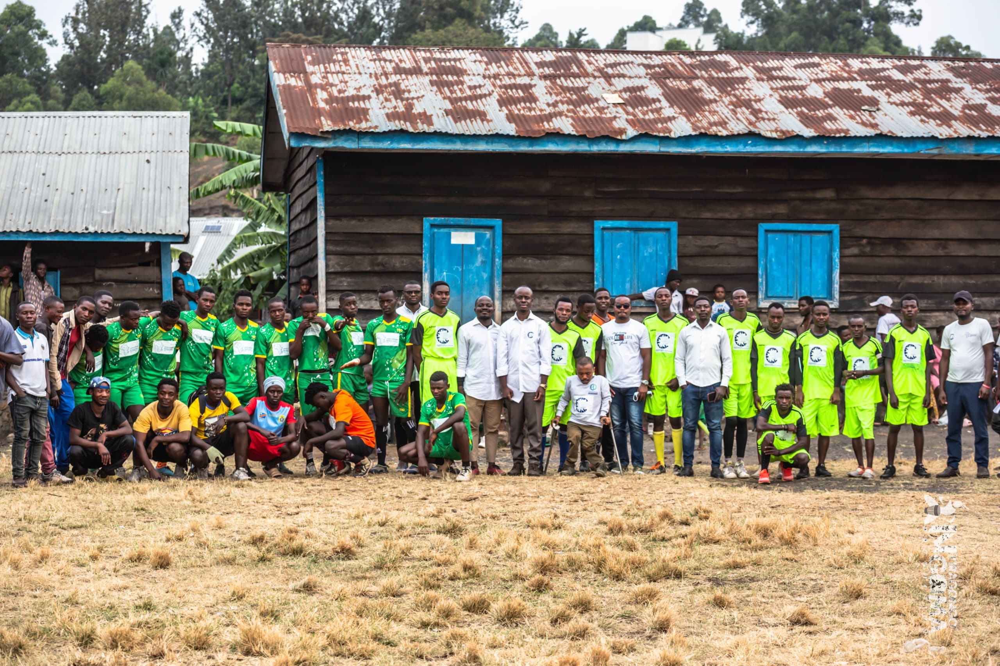
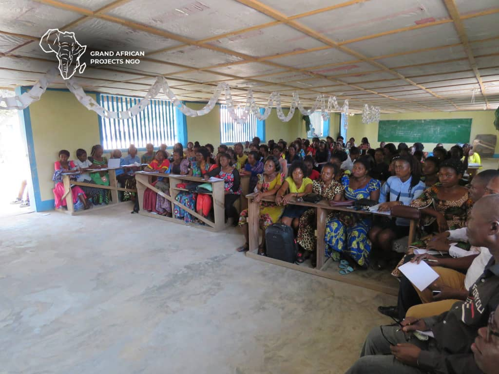

Notre Mission
Équiper et connecter de jeunes leaders transformationnels pour concevoir et mettre en œuvre des solutions durables aux priorités urgentes de l'Afrique.

GAP réunit jeunes, institutions, ONG et décideurs autour d'un agenda commun : leadership pratique, développement inclusif, consolidation de la paix et innovation au service des communautés.

Grand African Projects (GAP) a été fondé pour répondre à un besoin critique : connecter l'ambition de la jeunesse africaine à des compétences de leadership éthique, des ressources et des plateformes d'action réelles. À travers nos Stations, nos initiatives SkillAid et nos sommets de haut niveau, nous construisons des espaces de confiance où la prochaine génération conçoit et met en œuvre des solutions durables.
Impact local avec une ambition continentale à long terme.
Transparence, inclusion, dignité et responsabilité.
Jeunes, institutions, ONG et partenaires alignés.
Équiper et connecter de jeunes leaders transformationnels pour concevoir et mettre en œuvre des solutions durables aux priorités urgentes de l'Afrique.
Un continent où les institutions publiques, civiques et privées sont dirigées par des personnes de caractère, de compétence et de conscience profonde du bien commun africain.
Intégrité sans compromis · Redevabilité radicale · Respect de la dignité humaine · Collaboration intergénérationnelle · Excellence pratique.
Former des leaders éthiques capables de mobiliser communautés, institutions et idées en action.
DécouvrirOuvrir des voies pour que les jeunes participent à la gouvernance, la paix et l'innovation.
DécouvrirConcevoir des solutions locales qui renforcent l'éducation, les moyens de subsistance et la résilience.
DécouvrirSoutenir des institutions transparentes et une prise de décision inclusive avec les jeunes à la table.
DécouvrirÉquiper les participants de compétences employables, de capacités numériques et de confiance entrepreneuriale.
DécouvrirAvancer le leadership vert et les réponses environnementales pratiques dans les communautés vulnérables.
DécouvrirServir les familles déplacées et les enfants avec un soutien centré sur la dignité quand cela compte le plus.
DécouvrirConnecter ONG, institutions et alliés du secteur privé pour étendre ce qui fonctionne à travers l'Afrique.
DécouvrirDe l'inclusion économique à l'accès numérique, chaque domaine est soutenu par une initiative GAP ancrée dans la réalité africaine.
Chaque chiffre représente une personne dont la trajectoire a changé grâce à un leadership centré sur la communauté.
Laboratoires de leadership, engagement civique et mentorat pratique pour les futurs acteurs du changement.
Kits scolaires, uniformes et assistance aux frais livrés aux enfants en situation de vulnérabilité et de crise.
Leaders émergents équipés pour la consolidation de la paix, la redevabilité, la gouvernance et le développement inclusif.
Une présence panafricaine croissante, connectée par la collaboration et une vision partagée de transformation.
 Événement
Événement
Le Sommet GAP 2024 a rassemblé des centaines de leaders, institutions et partenaires autour des priorités urgentes de la jeunesse africaine et des alliances concrètes pour l'avenir.
Lire la suite Programme
Programme
GAP lance un nouveau cycle de formation pour les jeunes leaders dans plusieurs villes d'Afrique centrale, avec des sessions pratiques et un mentorat renforcé.
Découvrir
Club de lectureLe Club de Lecture Panafricain s'étend à de nouvelles universités et villes. Rejoignez une communauté de leaders qui lisent, discutent et agissent ensemble.
En savoir plusGAP m'a donné les outils pour passer de simple citoyen à leader communautaire actif. La formation m'a appris à mobiliser, à écouter et à construire des solutions durables avec ma communauté.
En tant que femme leader, GAP a été un espace où ma voix comptait vraiment. Le programme m'a permis de rejoindre des tables de décision où les jeunes femmes sont souvent absentes. C'est transformateur.
Le Club de Lecture GAP a changé ma façon de penser le leadership africain. Lire, débattre et agir ensemble avec des leaders de toute l'Afrique — c'est exactement ce dont notre génération a besoin.
Un aperçu authentique du travail, des personnes et des moments qui définissent le mouvement GAP à travers le continent.


Une action de terrain illustrant l'engagement de GAP pour former la prochaine génération de leaders africains éthiques, capables de mobiliser leurs communautés.
Voir sur YouTubeLe Clean City Project de GAP mobilise les jeunes autour de la préservation de l'environnement urbain et du renforcement de la résilience climatique dans nos communautés.
Voir sur YouTubeGAP collabore avec des institutions, des ONG, des universités et des partenaires du secteur privé qui partagent notre vision d'une Afrique dirigée par des leaders compétents et redevables.
Rejoignez notre réseau de partenaires stratégiques et contribuez à transformer l'Afrique à travers le leadership et l'innovation.
Que vous soyez un jeune leader, une institution, une université ou un partenaire stratégique — il y a une place pour vous dans l'écosystème GAP. Choisissez votre mode d'engagement.